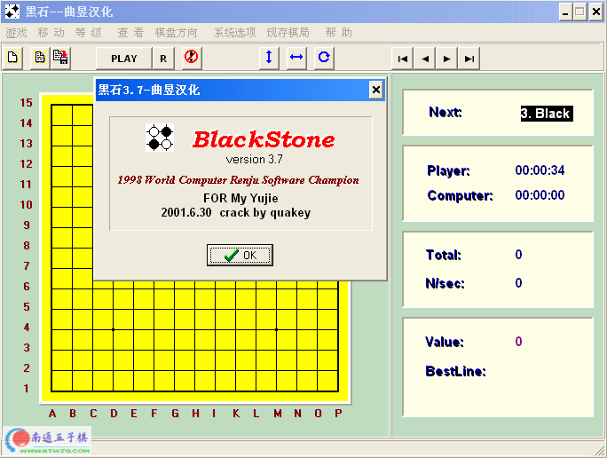

黑石3.7绿色汉化版
#1 黑石3.7绿色汉化版 作者：有志青年 发表时间：2006-2-13 9:43:47

绿色[不用安装直接运行]，全中文界面。blackstone3.7汉化中文版
下载地址：点击下载
#2 Re:黑石3.7绿色汉化版 作者：飞翔 发表时间：2006-2-18 9:46:54
目前的五子棋软件 还是黑石最强。。。
#3 Re:黑石3.7绿色汉化版 作者：neverlandz 发表时间：2006-2-22 23:01:35
正找这样的东东呢，谢谢了
#4 Re:黑石3.7绿色汉化版 作者：天堂的银元 发表时间：2006-2-25 20:55:13
说实话，这个不是很厉害的！我有4.0的！#5 Re:黑石3.7绿色汉化版 作者：柳生一剑 发表时间：2006-2-27 15:01:44
好像很厉害哈#6 Re:黑石3.7绿色汉化版 作者：孤独九段 发表时间：2006-3-7 17:06:45
连珠妙手和黑石哪个棋力高？#7 Re:黑石3.7绿色汉化版 作者：what14 发表时间：2006-3-13 0:52:23
大名顶顶的黑石？#8 Re:黑石3.7绿色汉化版 作者：滴水藏海 发表时间：2006-3-15 9:15:46
是真正的汉化吗#9 Re:黑石3.7绿色汉化版 作者：newhua 发表时间：2006-3-16 10:10:14
下个来研究一下~~~#10 Re:黑石3.7绿色汉化版 作者：掉线 发表时间：2006-3-23 13:34:34
不过好慢的#11 Re:黑石3.7绿色汉化版 作者：qinyiyu 发表时间：2006-3-25 1:47:35
这个挺不错呀。看看#12 Re:黑石3.7绿色汉化版 作者：518266 发表时间：2006-3-30 13:58:53
顶了!
黑石棋力真的不错啊!我一直都没赢过(丢人了)
#13 Re:黑石3.7绿色汉化版 作者：Turbo 发表时间：2006-4-8 20:53:37
这个有五子棋大师厉害吗??#14 Re:黑石3.7绿色汉化版 作者：寂静的海岛 发表时间：2006-4-15 12:36:10
谢谢，还是汉化版的好#15 Re:黑石3.7绿色汉化版 作者：scfox 发表时间：2006-4-16 16:26:14
这玩意超厉害的
#16 Re:黑石3.7绿色汉化版 作者：顺风 发表时间：2006-4-21 17:09:40
有没有定式学习功能。#17 Re:黑石3.7绿色汉化版 作者：李睿凡 发表时间：2006-4-23 13:58:14
呵呵,这个软件很厉害#18 Re:黑石3.7绿色汉化版 作者：TGG 发表时间：2006-4-25 3:06:41
这个是不是很厉害的啊.
#19 Re:黑石3.7绿色汉化版 作者：抵拢倒左拐 发表时间：2006-5-18 17:53:51
太感谢了啊#20 Re:黑石3.7绿色汉化版 作者：期待你 发表时间：2006-9-3 0:48:42
怎么具体运用？我试过的但是走棋的时候没有走几步就不指示怎么走了，请楼主能不能具体讲一下怎么运用，先谢了#21 Re:黑石3.7绿色汉化版 作者：voila 发表时间：2006-12-18 23:55:16
楼主强人哦～～多谢多谢。。。。#22 Re:黑石3.7绿色汉化版 作者：复色光 发表时间：2006-12-26 10:46:51
这个是极品。。。要支持#23 Re:黑石3.7绿色汉化版 作者：chengl 发表时间：2007-2-15 14:34:33
谢谢，下一个先#24 Re:黑石3.7绿色汉化版 作者：xy6942 发表时间：2007-2-22 9:05:16
谢谢，这个软件很不错。#25 Re:黑石3.7绿色汉化版 作者：pengzh 发表时间：2007-2-28 8:12:41
我一般用黑石都用加速器加快速度
#26 Re:黑石3.7绿色汉化版 作者：木香 发表时间：2007-2-28 16:36:08
下载了，真有那么好吗？
#27 Re:黑石3.7绿色汉化版 作者：噩梦聊斋 发表时间：2007-3-2 17:25:15
呵呵，好东西呀，感谢楼主~~~
#28 Re:黑石3.7绿色汉化版 作者：gdqb 发表时间：2007-3-3 14:19:30
太感谢你了！
#29 Re:黑石3.7绿色汉化版 作者：nuky 发表时间：2007-3-13 15:20:21
喜欢这种小游戏。
看看。
#30 Re:黑石3.7绿色汉化版 作者：志钦 发表时间：2007-3-16 10:26:21
谢谢
#31 Re:黑石3.7绿色汉化版 作者：友善 发表时间：2007-3-17 20:01:58
棋力还可以#32 Re:黑石3.7绿色汉化版 作者：小白 发表时间：2007-3-19 23:47:51
哈哈,终于找到了~~~~~~~~~~~~~~!
太感谢你了，楼主~~!
#33 Re:黑石3.7绿色汉化版 作者：lw_icy 发表时间：2007-3-20 0:57:54
是太慢啊
#34 Re:黑石3.7绿色汉化版 作者：刑天剑客 发表时间：2007-3-22 16:44:32
怎么用啊？不知如何用哦#35 Re:黑石3.7绿色汉化版 作者：昌隆地方工业 发表时间：2007-3-24 17:49:31
好东西
#36 Re:黑石3.7绿色汉化版 作者：小丸.net 发表时间：2007-3-24 22:18:52
这是这个黑石下出来的白14
#37 Re:黑石3.7绿色汉化版 作者：tnt122 发表时间：2007-3-25 16:14:58
真的好用吗?我一定要下载看一下~#38 Re:黑石3.7绿色汉化版 作者：去 发表时间：2007-3-31 1:52:43
可以换成自由模式吗?``就是不用选棋的#39 Re:黑石3.7绿色汉化版 作者：花木兰 发表时间：2007-4-7 23:11:36
qq#40 Re:黑石3.7绿色汉化版 作者：xyh253 发表时间：2007-4-9 0:16:30
支持#41 Re:黑石3.7绿色汉化版 作者：kgdmqj 发表时间：2007-4-10 8:30:42
我也想要一份啊，#42 Re:黑石3.7绿色汉化版 作者：894881 发表时间：2007-4-13 20:15:07
看看~~#43 Re:黑石3.7绿色汉化版 作者：pczsj 发表时间：2007-4-17 12:45:18
谢谢斑主了！不过，现在最新的好像是汉化3.82呀！还是有劳斑主更换最新的呀！#44 Re:Re:黑石3.7绿色汉化版 作者：有志青年 发表时间：2007-4-17 13:01:23
引用：
原文由 pczsj 发表于 2007-4-17 12:45:18 :
谢谢斑主了！不过，现在最新的好像是汉化3.82呀！还是有劳斑主更换最新的呀！
这里就是
#45 Re:黑石3.7绿色汉化版 作者：漠风灵 发表时间：2007-4-17 19:23:19
黑石3.7的绿色汉化怎么经常停机不下了呀#46 Re:黑石3.7绿色汉化版 作者：凤舞九天 发表时间：2007-4-18 9:06:03
新来的还请关照，不过这个黑石的太麻烦了，怎么用来用去还要算那么长时间啊？#47 Re:黑石3.7绿色汉化版 作者：ckg02 发表时间：2007-4-18 18:48:34
好东西啊#48 Re:黑石3.7绿色汉化版 作者：lyf666 发表时间：2007-4-18 19:40:02
正找这样的东东呢，谢谢了
#49 Re:黑石3.7绿色汉化版 作者：tuxt 发表时间：2007-4-21 18:38:11
中文版的`#50 Re:黑石3.7绿色汉化版 作者：Oublie 发表时间：2007-4-24 17:49:28
看看#51 Re:黑石3.7绿色汉化版 作者：世事如棋 发表时间：2007-5-1 20:45:07
下个来研究一下~~~#52 Re:黑石3.7绿色汉化版 作者：SX05 发表时间：2007-5-6 14:17:02
下载来看看
#53 Re:黑石3.7绿色汉化版 作者：青发伊凌寺 发表时间：2007-5-6 21:58:07
用一下先,谢谢啊!#54 Re:黑石3.7绿色汉化版 作者：LKJHGF 发表时间：2007-6-10 17:21:09
不如终结者。我试了。虽然终结者是无禁的。但只要最后几步改一下，黑石根本不递招！
还是中国人自己的软件厉害
#55 Re:正找这样的东东呢，谢谢了 作者：kwf325 发表时间：2007-7-31 1:25:21
正找这样的东东呢，谢谢了
正找这样的东东呢，谢谢了
#56 Re:黑石3.7绿色汉化版 作者：NISHIS 发表时间：2007-8-15 20:32:14
不过好慢的
#57 Re:黑石3.7绿色汉化版 作者：w2mz55 发表时间：2007-8-23 15:01:27
谢谢啊～找了好久了
#58 Re:黑石3.7绿色汉化版 作者：j68080 发表时间：2007-9-2 21:17:17
我整找这个游戏呢
#59 Re:黑石3.7绿色汉化版 作者：jicho 发表时间：2007-9-10 22:37:57
我想要試試看 >_<#60 Re:黑石3.7绿色汉化版 作者：asd111 发表时间：2007-9-11 11:01:24
我也要#61 Re:黑石3.7绿色汉化版 作者：双队长 发表时间：2007-9-13 11:05:50
呵呵 你们拿来杀人 还是自己学啊#62 Re:黑石3.7绿色汉化版 作者：蜗牛 发表时间：2007-9-16 8:06:36
一点都不好 慢的要死！～～～#63 Re:黑石3.7绿色汉化版 作者：超级man 发表时间：2007-9-17 20:31:15
简直没法搞哦
#64 Re:黑石3.7绿色汉化版 作者：madcob 发表时间：2007-9-19 19:03:13
好东西要分享
#65 Re:黑石3.7绿色汉化版 作者：tkee 发表时间：2007-9-21 19:44:52
最近迷上五子棋了，下一个研究研究
ps我用手机玩人机对战时太少赢了，555
#66 Re:黑石3.7绿色汉化版 作者：feel 发表时间：2007-9-24 1:42:18
下载#67 Re:黑石3.7绿色汉化版 作者：北极光 发表时间：2007-9-25 15:33:28
太感谢了！#68 Re:黑石3.7绿色汉化版 作者：祝振力 发表时间：2007-9-30 23:48:11
我也顶一下力了看看#69 Re:黑石3.7绿色汉化版 作者：清扬 发表时间：2007-10-6 13:12:51
下载了，试试。先谢谢啊#70 Re:黑石3.7绿色汉化版 作者：huanyu 发表时间：2007-10-8 13:42:31
找了好长时间了，呵呵
#71 Re:黑石3.7绿色汉化版 作者：sean10 发表时间：2007-11-4 10:10:22
谢谢楼主 找得好辛苦！！！#72 Re:黑石3.7绿色汉化版 作者：励精 发表时间：2007-11-4 20:55:59
3.7最过时了,俺的励精连珠教室里还有BlackStone3.82的励精汉化版呢.
#73 Re:黑石3.7绿色汉化版 作者：实现者 发表时间：2007-11-11 21:48:08
不错的软件
#74 Re:黑石3.7绿色汉化版 作者：jjwlb 发表时间：2007-11-14 12:51:23
hehe 不错#75 Re:黑石3.7绿色汉化版 作者：川东响马 发表时间：2007-11-16 23:51:17
据说黑石不错,下来研究一下看,好象棋盘的分辩率不能改变,在1280的分辩率下显得太小了.#76 Re:黑石3.7绿色汉化版 作者：天翼 发表时间：2007-11-20 18:25:13
谢谢分享，我要下载
#77 Re:黑石3.7绿色汉化版 作者：aiken 发表时间：2007-11-20 19:11:29
好东东，我要下载
#78 Re:黑石3.7绿色汉化版 作者：qq7308 发表时间：2007-11-22 21:49:23
我才玩了一会就输了。#79 Re:黑石3.7绿色汉化版 作者：hayaku 发表时间：2007-11-24 22:44:46
下来学习一下~~谢谢楼主了#80 Re:黑石3.7绿色汉化版 作者：guoyon 发表时间：2007-12-1 2:54:39
听说黑石很好，下了不会用啊！怎么用看不懂，郁闷1#81 Re:黑石3.7绿色汉化版 作者：liyu 发表时间：2007-12-3 21:39:03
谢谢了，刚好有用啊，
#82 Re:黑石3.7绿色汉化版 作者：中国高人 发表时间：2007-12-5 11:25:17
这个软件好难找啊
#83 Re:黑石3.7绿色汉化版 作者：紗耶香 发表时间：2008-2-4 9:50:14
谢谢分享0 0..........#84 Re:黑石3.7绿色汉化版 作者：欧乙平 发表时间：2008-3-16 8:21:40
能用不！？
#85 Re:黑石3.7绿色汉化版 作者：棋谈人生 发表时间：2008-4-16 3:45:28
郁闷 这玩意好比真正的对手一样 还要交换 郁闷 本想练习下花月 一开花 就给交换了 倒#86 Re:黑石3.7绿色汉化版 作者：小丸.net 发表时间：2008-4-16 16:25:02
让对手换了以后，你马上按下一PLAY按扭，现在，好了，机器执白了．．．．
#87 Re:黑石3.7绿色汉化版 作者：糖醋小排 发表时间：2008-4-17 20:57:26
厉害啊
#88 Re:黑石3.7绿色汉化版 作者：汪洋孤舟 发表时间：2008-4-23 0:43:51
谁有4.0绿色汉化 的？谢谢了！其实主要是想找棋力强的，以前那些棋力虽然强，但还没达到我满意的程度！#89 Re:黑石3.7绿色汉化版 作者：汪洋孤舟 发表时间：2008-4-24 22:18:02
也才三段啊！有没有没禁的，怎么调啊？#90 Re:黑石3.7绿色汉化版 作者：小阿臭 发表时间：2008-5-7 11:00:14
现在高手们都在哪里下棋啊？？？？？？？？？？？？？
#91 Re:黑石3.7绿色汉化版 作者：执五子之手8 发表时间：2008-5-16 10:34:59
我下载了贵网站的-黑石 曲昱汉化想用黑石帮做五子棋的习题,
不知道如何使用?
能告诉一下吗?
#92 Re:黑石3.7绿色汉化版 作者：越狱行辕 发表时间：2008-6-10 10:24:30
右键落子，摆上习题的形状。然后点PIAY#93 Re:黑石3.7绿色汉化版 作者：jedyin 发表时间：2008-6-17 10:17:37
到了什么水平了
#94 Re:黑石3.7绿色汉化版 作者：路漫漫其修远 发表时间：2008-8-9 13:54:07


#95 Re:黑石3.7绿色汉化版 作者：香雪美景 发表时间：2008-9-4 9:47:52
我下了可不知道怎么用#96 Re:黑石3.7绿色汉化版 作者：其怪 发表时间：2008-9-11 14:39:24
这个版本其实不怎么好
#97 Re:黑石3.7绿色汉化版 作者：空 发表时间：2008-9-11 20:16:08
很不错～谢谢我正需要这个软件！！！#98 Re:黑石3.7绿色汉化版 作者：孙健大天才 发表时间：2008-9-24 22:37:07
怎么下载不了
#99 Re:黑石3.7绿色汉化版 作者：天地 发表时间：2009-1-1 8:22:22
用这个和人下输了！#100 Re:黑石3.7绿色汉化版 作者：蝶舞红枫 发表时间：2009-1-17 12:04:40
问一下，黑石走棋太慢我听说可以靠假如棋谱解决，但怎么加入棋谱？棋谱要是什么格式的？#101 Re:黑石3.7绿色汉化版 作者：青方 发表时间：2009-1-17 19:12:16
怎么3.82版的要贵宾才能下，先下这个看看。#102 Re:黑石3.7绿色汉化版 作者：星河一夜 发表时间：2009-1-23 2:53:14
下来看看啊，谢谢#103 Re:黑石3.7绿色汉化版 作者：疏星淡月 发表时间：2009-3-14 1:12:18
感谢分享，呵呵收下了
#104 Re:黑石3.7绿色汉化版 作者：解放者 发表时间：2009-6-10 0:41:13
算棋太慢了呀！！！！#105 Re:黑石3.7绿色汉化版 作者：不锈钢茶壶 发表时间：2009-6-11 1:09:17
顶楼主～～黑石～～～我喜欢～～～～～#106 Re:黑石3.7绿色汉化版 作者：飘渺公元 发表时间：2009-7-12 12:01:08
我已经下载了`可不知道怎么用~谁能帮忙解释一下怎么用~~~谢谢#107 Re:Re:黑石3.7绿色汉化版 作者：wrwak 发表时间：2009-7-12 12:16:01
首先你要设置 1 控制-计算时间 都尽量的大 2 显示VALUE 3 段位为三段
然后开始下了：鼠标右键是放置棋子 左键是下棋 左键下了后电脑会开始计算，VALUE越高 越优势，到200就基本必胜了。
最后你可以用上面的箭头看他的最强路线
#108 Re:黑石3.7绿色汉化版 作者：长发女孩 发表时间：2009-10-6 18:35:56
连珠妙手和黑石基本上相等
#109 Re:黑石3.7绿色汉化版 作者：123 发表时间：2010-1-18 15:10:28
hahah还是我智商高！！ 不让注册，我蒙了一个就进去了！ 因为嘿嘿，想下的加我qq 447101433#110 Re:黑石3.7绿色汉化版 作者：嘿瓯 发表时间：2010-9-17 21:18:17
谢谢了，好东东1
#111 Re:黑石3.7绿色汉化版 作者：龙小小 发表时间：2010-9-19 20:10:03
4。0厉害，吗？？？#112 Re:黑石3.7绿色汉化版 作者：负棋 发表时间：2010-9-21 16:27:43
astg ag aga gag ag#113 Re:黑石3.7绿色汉化版 作者：五子米猫 发表时间：2010-9-21 16:54:30
竟然有人说黑石和连珠妙手相等？？？用的多半是山寨黑石吧？！
黑石最高级，起码能达到专业连珠2段水平！那个妙手、五子棋大师2的最高水平恐怕专业一段都够呛！
［此帖子已被 五子米猫 在 2010-9-21 16:55:20 编辑过］
#114 Re:黑石3.7绿色汉化版 作者：人更 发表时间：2010-9-22 9:17:38
多谢分享。 绿色我喜欢~#115 Re:黑石3.7绿色汉化版 作者：爱棋的猪 发表时间：2011-1-8 18:24:19
是真正的黑石吗？ 我不懂 也不会下载 怎么弄？#116 Re:黑石3.7绿色汉化版 作者：爱棋的猪 发表时间：2011-1-8 18:25:35
怎么下载？我在百度看有好多不知道哪个是？#117 Re:黑石3.7绿色汉化版 作者：爱棋的猪 发表时间：2011-1-8 18:28:19
能给个网址吗？黑石的#118 Re:黑石3.7绿色汉化版 作者：洪城骄子 发表时间：2011-5-12 13:24:01
收藏了，这个没有被360拦截。
#119 Re:Re:黑石3.7绿色汉化版 作者：苏进 发表时间：2011-6-23 19:57:20
你加我QQ 277 280414 给我发个 黑石软件 好吗
#120 Re:黑石3.7绿色汉化版 作者：拈棋居 发表时间：2011-7-12 2:32:15
2006年都有黑石了啊
#121 Re:黑石3.7绿色汉化版 作者：隔世的风 发表时间：2011-7-12 7:19:31
黑石是干什么用的?#122 Re:黑石3.7绿色汉化版 作者：小元 发表时间：2011-7-12 10:36:22
五子棋软件。#123 Re:黑石3.7绿色汉化版 作者：佛心诚 发表时间：2011-9-15 23:43:28
这东西在五子棋届真的是不容小觑#124 Re:黑石3.7绿色汉化版 作者：北交卡卡 发表时间：2011-10-30 18:19:09
下了
#125 Re:黑石3.7绿色汉化版 作者：纸一张 发表时间：2012-7-25 16:20:42
下载来慢慢学习